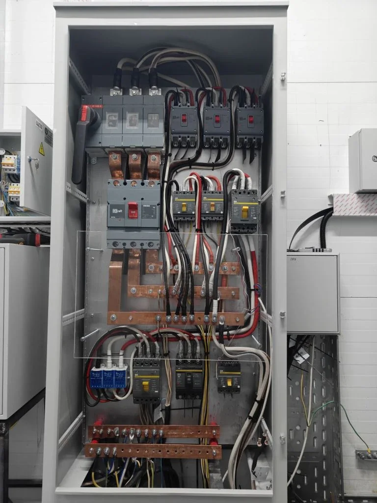

Частный дом / баня / сауна
Электромонтаж бани в частном доме: что предусмотреть до отделки
Баня кажется небольшим объектом, но по электрике она часто сложнее обычной комнаты: влажность, высокая температура, печь, бойлер, насосы, освещение и уличные линии требуют аккуратного подхода. Ошибки на этом этапе обычно проявляются уже после отделки, когда исправлять дороже и неудобнее.

Почему электрику бани лучше планировать заранее
В бане есть зоны с разными условиями: парная, моечная, комната отдыха, техническая зона, наружное освещение. Для каждой зоны важно выбрать подходящие линии, места установки оборудования и способ прокладки кабеля.
Если сначала сделать отделку, а потом вспоминать про бойлер, вентиляцию, насос или подсветку, появляются лишние штробы, открытые кабели и компромиссные решения. Поэтому электромонтаж бани лучше привязывать к плану оборудования до чистовой отделки.
Что обычно входит в электромонтаж бани
- Отдельная линия питания от дома или основного щита.
- Щит или отдельные аппараты защиты под баню и технические зоны.
- Линии освещения для парной, моечной, комнаты отдыха и улицы.
- Питание электропечи, бойлера, насосов, вентиляции и теплого пола, если они предусмотрены.
- Розетки в безопасных местах с учетом влажности и сценариев использования.
- Маркировка линий и понятная логика отключения оборудования.
Что влияет на стоимость
На цену влияет расстояние от основного щита, мощность печи и оборудования, готовность стен и потолков, количество помещений, способ прокладки кабеля, наличие проекта и требования к наружным линиям.
Небольшая баня с освещением и несколькими розетками считается иначе, чем баня с электропечью, бойлером, насосами, теплым полом и отдельным щитом. Поэтому корректнее считать не только площадь, а весь набор нагрузок.
Какие данные прислать для расчета
Для предварительной оценки достаточно плана или схемы от руки, фото объекта, расстояния до основного щита, списка оборудования и понимания стадии работ: коробка, черновая отделка, уже готовая отделка или реконструкция.
Если баня находится рядом с частным домом в Екатеринбурге или Свердловской области, можно считать ее вместе с электромонтажом дома, котельной, уличного освещения и распределительного щита.
Когда баню лучше считать вместе с домом
Если дом еще в ремонте или строится, баню удобнее закладывать сразу в общую схему электрики. Так проще предусмотреть ввод, резерв по мощности, отдельные группы, автоматику, уличные линии и будущие подключения.
Такой подход обычно дешевле и аккуратнее, чем делать баню отдельной переделкой после завершения основного электромонтажа.
Нужно рассчитать электромонтаж бани?
Пришлите план, фото объекта и список оборудования. Подскажем, какие линии и щит лучше предусмотреть до отделки.
Оставить заявку